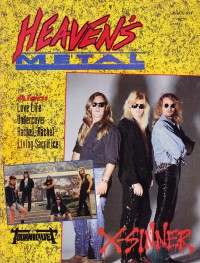

CMnexus
: Contemporary Christian culture, music, and media.
|
X-SinnerOn the cover
September 1991
Heaven's Metal | Media coverage:- Nov 1989 in Notebored "X-Sinner"
- Feb 1990 in Heaven's Metal "Conquering Sin With Jesus Christ", by Doug Van Pelt
- Jun 1990 in CCM "New Faces: Living On The Edge", by Doug Van Pelt
- Sep 1990 in CCM "In Concert: Austin Opera House, Austin, TX", by Doug Van Pelt
- Fall 1990 in Harvest Rock Syndicate "X-Sinner Get It On For Christ", by Bruce A. Brown
- Jul 1991 in Notebored "X-Sinner"
- Sep 1991 in Heaven's Metal "Makin' Peace Treaties and Noise Pollution", by Doug Van Pelt
- Sep 1991 in Heaven's Metal "Poster: X-Sinner (Greg Bishop)"
- Sep 1991 in Heaven's Metal "Concert Review: Austin, TX", by Doug Van Pelt
- Sep 1991 in Harvest Rock Syndicate "Metal Shop: Going Native", by Dan MacIntosh
- Spr 2007 in Uprise Zine "Still Breathing: X-Sinner"
- Oct 2008 in Heaven's Metal "Back In Blood!", by Todd Walker
- Aug 2009 in Heaven's Metal "News Bullets: X-Sinner"
- Sep 2010 in Heaven's Metal "News Bullets: X-Sinner"
- May 2012 in HM "In Describing the Essence...", by Doug Van Pelt
Albums & reviews:2001: Loud and Proud
2008: World Covered in Blood
Award Summary (Nominations / Wins)
Dove AwardsBooks about X-Sinner
- "X-Sinner" in The Encyclopedia of Contemporary Christian Music (Mark Allan Powell, 2002).
|
|